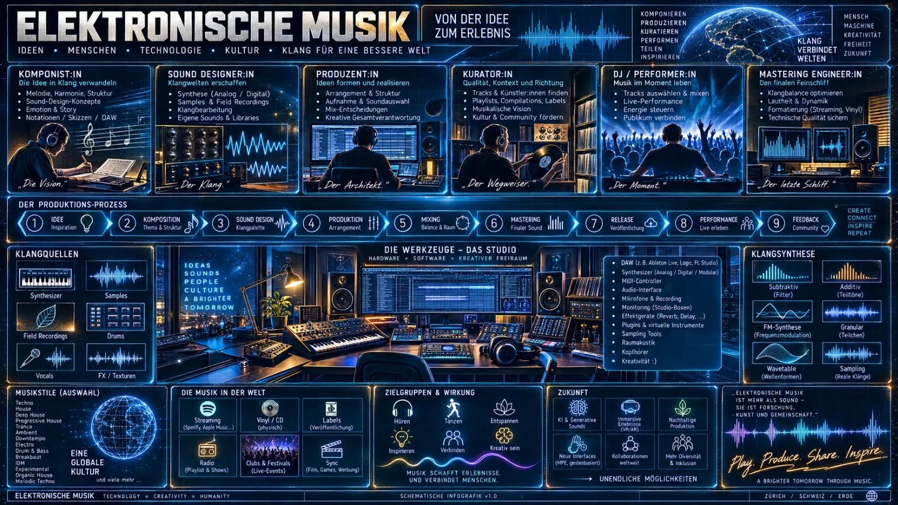

Musik
Radio-Archiv von Blue Dimension und Galaxy Space Night.

Infografik in voller Größe öffnen

| Style | Event | Anhören | Download |
|---|---|---|---|
| Housemusic | 992 | anhören | – |
| Progressive-House, Tech-House | 826 | anhören | – |
| 5min hiphop 355min electro space | 821 | anhören | – |
| elektronisch | 816 | anhören | – |
| progressive | 162 | anhören | – |
| Progressive-Tech House | 128 | anhören | – |
| progressive-goa | 126 | anhören | – |
| progressive | 109 | anhören | – |
| groovy deep'n'progress | 102 | anhören | – |
| progressive | 97 | anhören | – |
| JingleBeats | 87 | anhören | – |
| progressive | 84 | anhören | – |
| SexyProgressive | 71 | anhören | – |
| progressive | 65 | anhören | – |
| progressive | 63 | anhören | – |
| progressive | 49 | anhören | – |
| progressive | 48 | anhören | – |
| progressive | 48 | anhören | – |
| progressive | 38 | anhören | – |
| progressive | 47 | anhören | – |
| groovy deep'n'progress | 33 | anhören | – |
| progressive | 28 | anhören | – |
| Local Progressive | 27 | anhören | – |
| groovy deep'n'progress | 26 | anhören | – |
| josefs ruhe special | 10 | anhören | – |